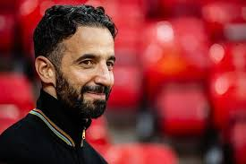
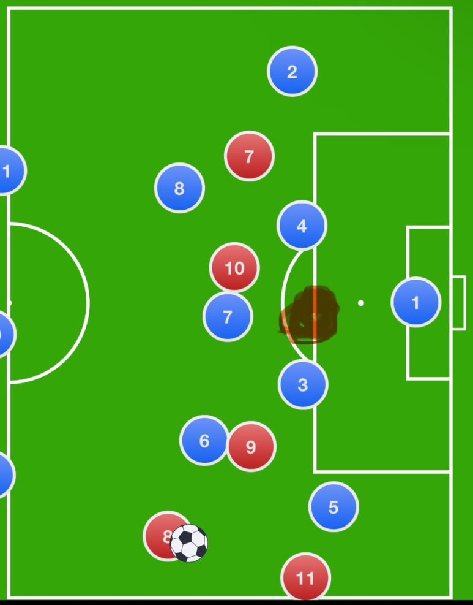
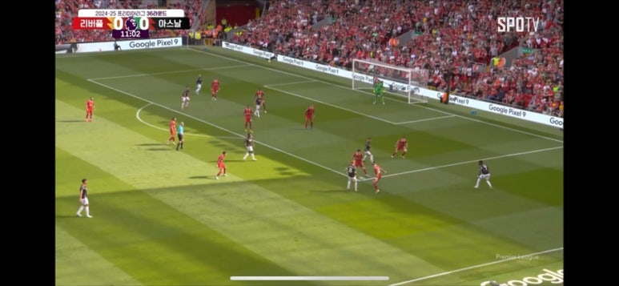
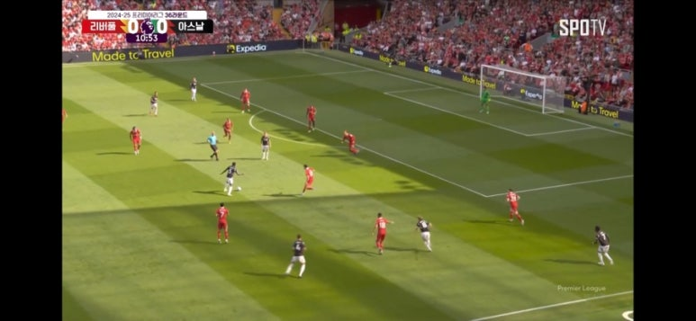

토트넘전 수비 불안 장면
아모림경질 주장이 나오는 이유
맨유는 2000년대 사상 처음으로 15위라는 참담한 리그 성적과 유로파 준우승으로 최악의 시즌을 마무리한 아모림 감독의 맨유였습니다.
이네오스는 믿고 한 시즌을 더 보려고 하지만 경질을 주장하는 사람들이 많이 생겼습니다.
이는 단순히 참담한 결과 때문만이 아니고 전술에 대한 의구심이 존재하기 때문입니다.
그래서 전술을 하나 하나 뜯어서 보겠습니다
브렌트포드전 수비 불안 장면
첼시전 수비 불안 장면
공통점이 뭘까요? 바로 크로스로 인한 윙백과 스토퍼 사이의 공간에서 나온 헤더 실점 장면입니다.
브렌트포드 전에선 의미없이 진행된 수비 지역에서의 선수 배치와 맨마킹의 낭비(매과이어)
첼시 전에서도 의미 없이 서있는 수비와 맨마킹의 낭비(우가르테, 브페)
토트넘전 수비 불안 장면
마찬가지로 여기서도 의미없는 수비 포지셔닝과 카세미루 맨마킹의 낭비가 보입니다.
우연이 아닌 구조의 문제라는 것이죠.
일차적으로 수비가 크로스를 제어하지 못한 것과 이차적으로 박스 안에 수비가 낭비되는 것이
아모림 수비 전술에 가장 큰 문제인데 이건 동시다발적으로 일어납니다
현재 아모림 수비 전술
투미들 특성상 3선에서 한 번 재껴지면 다음 커버가 매우 느리고 공간이 뜰 수 밖에 없고
하프 스페이스로의 진입이 매우 용이합니다.
그래서 하프 스페이스로 진입하는 것을 막기 위해 3선의 선수 한 명이 박스 쪽으로 붙어
수비하게 되면 사이드에서의 공간이 크게 열리는거죠.
이러니 지속된 문제들이 발생했던겁니다.
그래서 그걸 막기 위해선 스위퍼가 위험을 감수하고 3선과 같은 선상에서 압박을 넣어줘야
사이드로 공이 돌게 되죠.
현재 아모림 수비 전술2
빨간색 마구잡이로 칠한게 상대 스트라이커라 치고 임의의 숫자 7번을 우리팀 스위퍼로 가정했을 때
라인만 한 칸 올려도 하프스페이스로의 진입이 불가능하고 사이드로 공을 줄 수 밖에 없고
수비 라인에서의 트라잉앵글 구조로 압박을 줄 수 있습니다.
이걸 잘하는 팀이 어딜까요?
24-25 리버풀 수비 전술
맞습니다 리버풀입니다.
24-25 리버풀 수비 전술2
박스 안에 숫자는 적어도 이렇게 대형을 유지하며 압박을 넣어주니
상대가 사이드에 숫자를 아무리 배치해도
크로스를 올릴 공간과 각이 보이지 않고, 하프 스페이스로 들어온다해도
3미들 특성상 미드필더 한 명이 뚫려도 위와 같이 커버 해줄 선수가 두 명이 존재합니다.
마구잡이로 수가 많다고 수비가 안정적인 것은 아닙니다.
공간을 막고 상대를 최대한 우리가 몰아 넣은 지역에서 실수를 유발케 하는게 최선의 수비죠.
그런데 아모림은 수비의 안정성을 위한 3백 배치가 아닌
단순히 빌드업 시에 사용하는 후방 빌드업의 도구로써 사용하는게 큽니다.
그래서 후방 빌드업은 안정적인가하면.. 수치상으론 그렇게 보입니다.
왜냐면 OPPDA(후방 빌드업 시 탈압박)같은 수치들은 잘 나오거든요.